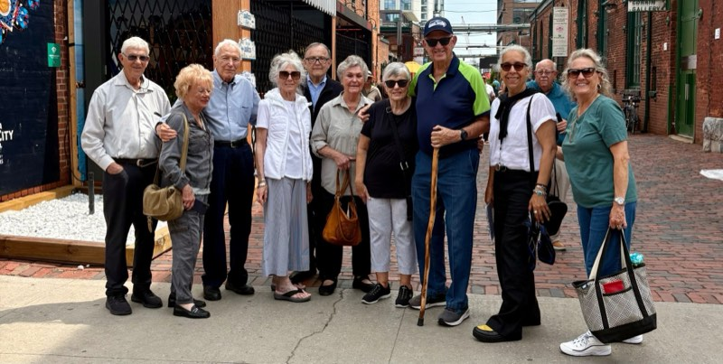

Toronto guiding
Full and half-day guided experiences across the city and its neighbourhoods, paced and themed for the group in front of me — not a fixed script.
I work with tour operators, destination management companies, meeting planners and corporate groups to plan and deliver Toronto experiences — from a half to a full guided day, or more.

Guiding is at the centre of what I do. Everything else supports it or extends it.
Full and half-day guided experiences across the city and its neighbourhoods, paced and themed for the group in front of me — not a fixed script.
I join your motorcoach as the local voice, turning a route through Toronto into a day that reads clearly from the seat.
A warm, organized welcome for arriving groups — the first friendly face who makes the logistics feel effortless.
Greeting and settling groups on arrival at Toronto Pearson, so the trip starts calmly from the moment they land.
Accompanying tour groups and corporate visitors through a program, holding the timing together and keeping everyone looked after.
Itineraries built from scratch for a specific audience — interests, access needs, language and pace all considered from the start.
Alongside guiding, I take on collaborative advisory work — helping tourism organizations, operators and partners shape experiences and collaboration, connect the right people, and think through how the plan will be delivered. If you’re developing something for Toronto and want a local perspective, that’s a conversation I welcome.
Tell me who’s coming and what you’re hoping the day will feel like. I’ll come back with an honest sense of what’s possible.